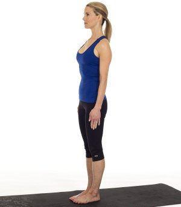

-

-
Mountain Pose
-
Downward Facing Dog
Planks
Triangle
Tree
Warrior-1
Warrior-2
Seated Forward Bend
Bridge Pose
Child's Pose
Mountain Pose is the base for all standing poses; it gives you a sense of how to ground in to your feet and feel the earth below you. Mountain pose may seem like "simply standing," but there is a ton going on.
How to do it?
Start standing with your feet together. Press down through all ten
toes as you spread them open. Engage your quadriceps to lift your
kneecaps and lift up through the inner thighs. Draw your abdominals in
and up as you lift your chest and press the tops of the shoulders
down. Feel your shoulder blades coming towards each other and open
your chest; but keep your palms facing inwards towards the body.
Imagine a string drawing the crown of the head up to the ceiling and
breathe deeply in to the torso. Hold for 5-8 breaths.
This online yoga program is your personal home practice. The online
classes target your body and mind and cover all the basic styles of
yoga. It's like a yoga studio in your own home. You'll do your first
sun salutations on your yoga mat and practice yoga at home like a real
yogi.

Downward Dog is used in most yoga practices and yoga classes and it stretches and strengthens the entire body. I always say, “a down dog a day keeps the doctor away.”
How to do it?
Come on to all fours with your wrists under your shoulders and knees
under your hips. Tuck under your toes and lift your hips up off the
floor as you draw them up at back towards your heels.
Keep your knees slightly bent if your hamstrings are tight, otherwise
try and straighten out your legs while keeping your hips back. Walk
your hands forward to give yourself more length if you need to.
Press firmly through your palms and rotate the inner elbows towards
each other. Hollow out the abdominals and keep engaging your legs to
keep the torso moving back towards the thighs. Hold for 5-8 breaths
before dropping back to hands and knees to rest.

Plank teaches us how to balance on our hands while using the entire body to support us. It is a great way to strengthen the abdominals, and learn to use the breath to help us stay in a challenging pose.
How to do it?
From all fours, tuck under your toes and lift your legs up off the
mat. Slide your heels back enough until you feel you are one straight
line of energy from your head to your feet.
Engage the lower abdominals, draw the shoulders down and away from the
ears, pull your ribs together and breathe deeply for 8-10 breaths.

Triangle is a wonderful standing posture to stretch the sides of the waist, open up the lungs, strengthen the legs and tone the entire body.
How to do it?
Start standing with your feet one leg's-length apart. Open and stretch
your arms to the sides at shoulder height. Turn your right foot out 90
degrees and your left toes in about 45 degrees.
Engage your quadriceps and abdominals as you hinge to the side over
your right leg. Place your right hand down on your ankle, shin or knee
(or a block if you have one) and lift your left arm up to the ceiling.
Turn your gaze up to the top hand and hold for 5-8 breaths. Lift up to
stand and repeat on the opposite side. Tip: I like to imagine I’m
stuck between two narrow walls when I’m in triangle pose.
Tree is an awesome standing balance for beginners to work on to gain focus and clarity, and learn to breathe while standing and keeping the body balanced on one foot.
How to do it?
Start with your feet together and place your right foot on your inner
left upper thigh. Press your hands in prayer and find a spot in front
of you that you can hold in a steady gaze.
Hold and breathe for 8-10 breaths then switch sides. Make sure you
don’t lean in to the standing leg and keep your abdominals engaged and
shoulders relaxed.
Warrior poses are essential for building strength and stamina in a yoga practice. They give us confidence and stretch the hips and thighs while building strength in the entire lower body and core. Warrior 1 is a gentle backbend; and a great pose for stretching open the front body (quads, hip flexors, psoas) while strengthening the legs, hips, buttocks, core and upper body.
How to do it?
For warrior one, you can take a giant step back with your left foot
coming towards a lunge, then turn your left heel down and angle your
left toes forward 75 degrees.
Lift your chest and press your palms up overhead. Step forward and
repeat on the opposite leg.
Warrior 2 is an external hip opener and opens up the inner thighs and groin. It's a good starting point for many side postures including triangle, extended angle and half moon balance.
How to do it?
Stand with your feet one leg’s-length apart. Turn your right toes out 90 degrees and your left toes in 45 degrees.
Bend
your right knee until it is directly over your right ankle while keeping the torso even between the hips.
Stretch your arms out to your sides and gaze over your right hand. Hold for 8-10 breaths before straightening the right
leg and turning your feet to the other side to repeat on left side.

It’s important to incorporate a forward bend in yoga practice to stretch the hamstrings, lower and upper back and sides.
Seated forward bend is the perfect fold for everyone to start to open up the body and learn to breathe through
uncomfortable positions.
If you feel any sharp pain, you need to back off; but if you feel the tension when you fold forward and you can continue
to breathe, you will slowly start to loosen up and let go. You can also keep your knees bent in the pose as long as the
feet stay flexed and together.
How to do it?
Start seated with your legs together, feet firmly flexed and not turning in or out, and your hands by your hips. Lift
your chest and start to hinge forward from your waist. Engage your lower abdominals and imagine your belly button moving
towards the top of your thighs.
Once you hit your maximum, stop and breathe for 8-10 breaths. Make sure your shoulders, head and neck are all released.
A counter pose to a forward bend is a back bend. Bridge is a good beginner’s back bend that stretches the front body and strengthens the back body.
How to do it?
Lie down on your back and place your feet hip width apart. Press firmly on to your feet and lift your butt up off the
mat.
Interlace your hands together and press the fists down to the floor as you open up your chest even more.
Imagine dragging your heels on the mat towards your shoulders to engage your hamstrings. Hold for 8-10 breaths then
lower your hips down and repeat two more times.

Every one needs a good resting pose and Child’s pose is an awesome one not just for beginners but for yoga practitioners
of all levels.
It’s good to learn child’s pose to use when you’re fatigued in Down Dog, before bed at night to work out the kinks, or
anytime you need a mental break and stress/tension relief.
How to do it?
Start on all fours then bring your knees and feet together as you sit your butt back to your heels and stretch your arms
forward.
Lower your forehead to the floor (or block or pillow or blanket) and let your entire body release. Hold for as
long as you wish!